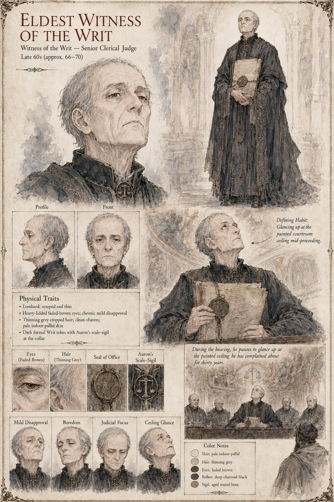

Eldest Witness of the Writ
Witness of the Writ · senior-most of the clerical judges
The senior-most of the clerical judges who hear Landulf's claim against Garibald's mill, presiding beneath a painted ceiling depicting Auron weighing three golden scales that have never quite balanced in the artist's rendering — a detail he's complained about for thirty years and will go on complaining about for several more. The ruling takes his court less than an hour to reach and considerably longer to read aloud, the witnesses of the Writ being men who love procedure roughly as much as they love Auron himself.